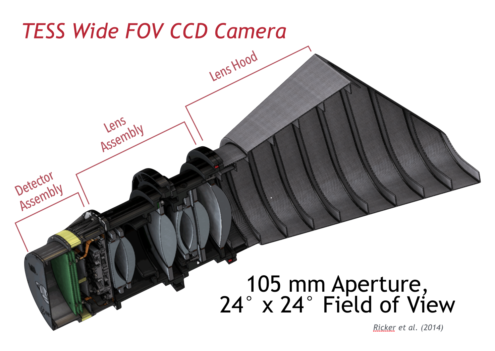
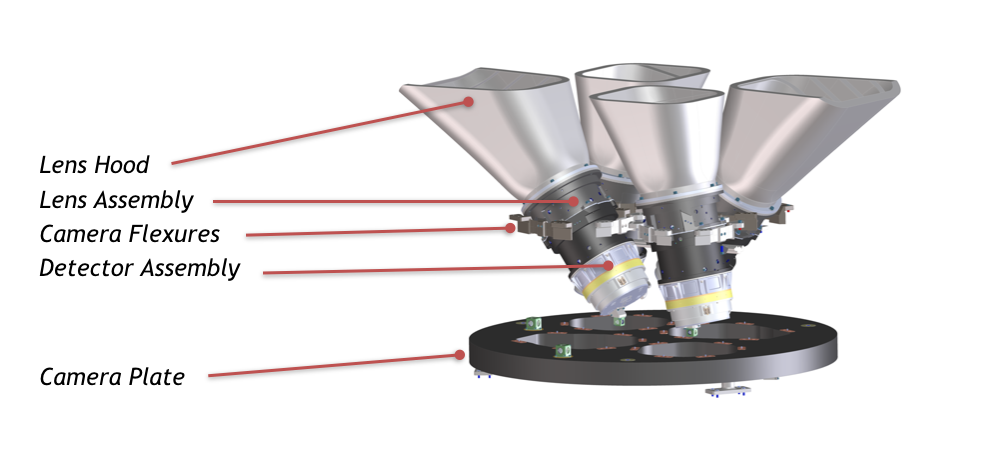
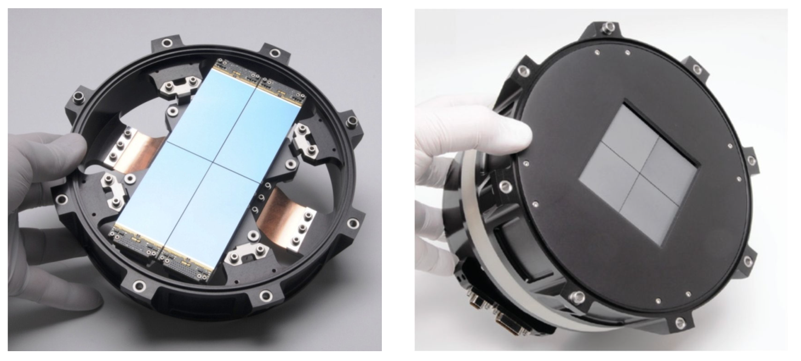
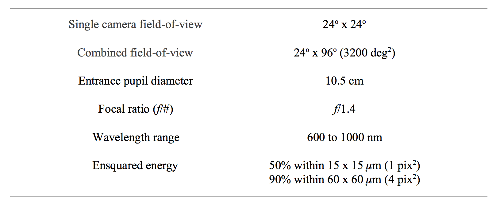
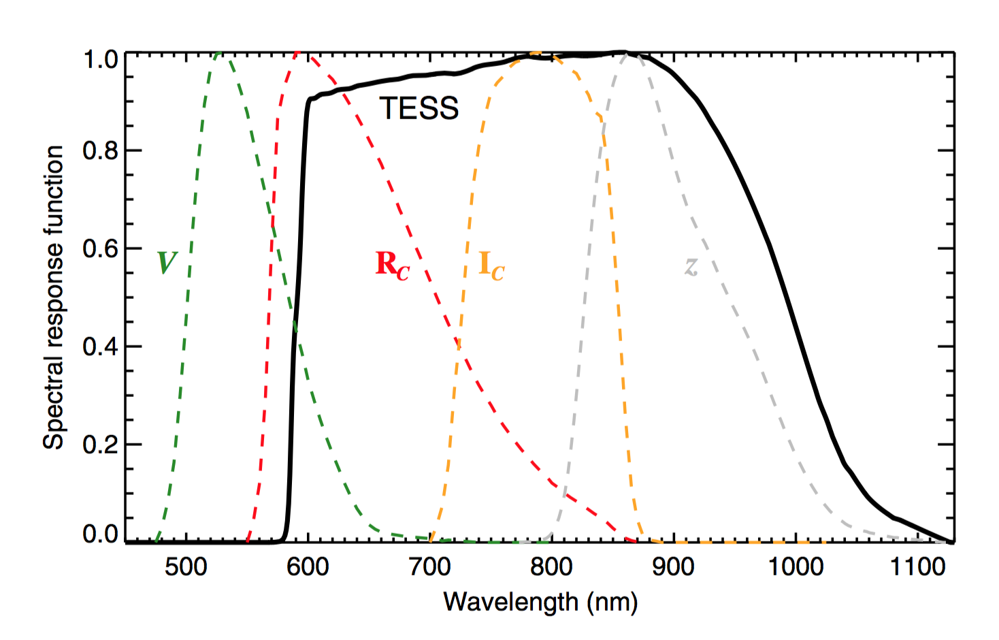
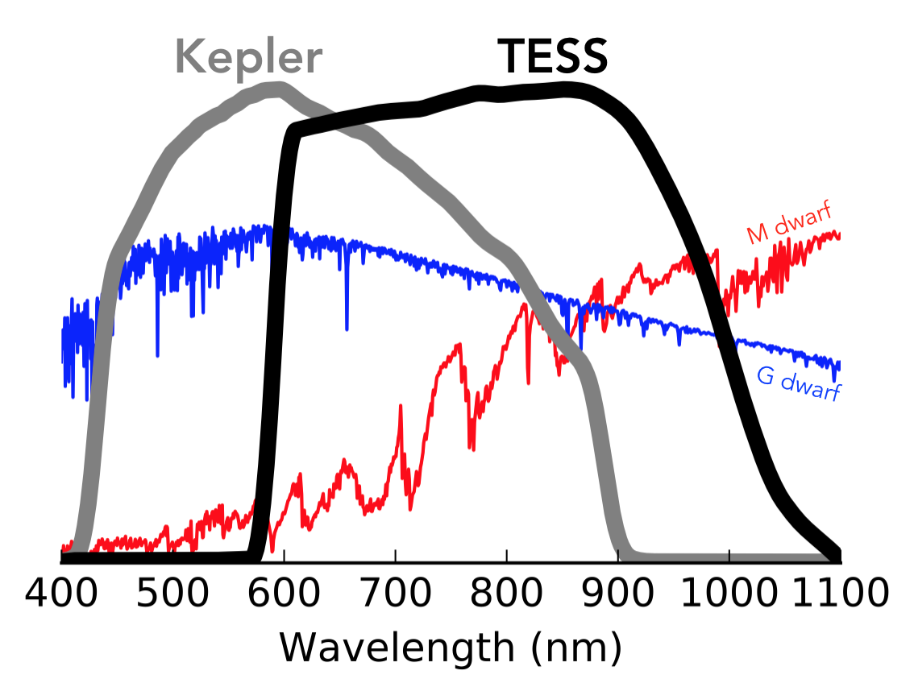
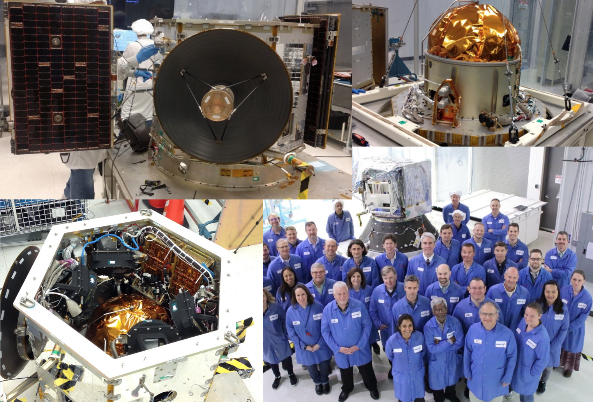

The TESS observatory consists of the spacecraft and the payload. The TESS payload has a single instrument, a camera suite composed of 4 wide field-of-view optical cameras and their associated hoods, mount, sun shield, and Data Handling Unit (DHU). The payload is coupled to the spacecraft, an NGIS LEOStar-2/750 satellite bus. The spacecraft provides power (via two deployable solar arrays), attitude control, data storage, and communications/transmission.

Artist's conception of the TESS spacecraft and payload. Image Credit: MIT
TESS cameras
TESS is equipped with four identical refractive cameras with a combined field-of-view (FOV) of 24x96 degrees (known as an observing sector). An overview of the FOV coverage and observing strategy for the mission can be found in the Operations page. Each camera consists of a CCD detector assembly, a lens assembly, and a lens hood.
Lens assembly
The lens assembly is a custom design housing seven lenses mounted into two separate aluminum barrels that are fastened together. The lens assembly has a 10.5 cm diameter entrance pupil and a focal ratio f/1.4. All optical elements have antireflection coatings and one element has a long-pass filter coating to enforce a short-wavelength cutoff at 600 nm in the TESS bandpass. Each camera forms a 24x24 un-vignetted image on the detector in its focal plane. The lens assemblies were designed for consistent image spot size across the field-of-view (FOV) and to produce under-sampled images similar to Kepler. Operating at nominal focus and a flight temperature of -75 degrees C, the 50% ensquared-energy half-width is 15 micron averaged over the FOV. This corresponds to 1 detector pixel or 21 arcseconds (approx. 0.35 arcmin) on sky. Along with an internal stray light baffle, each lens assembly aperture is equipped with a hood to reduce scattered light from the Earth and Moon.

Image Credit: MIT

The TESS Payload. Image Credit: MIT
CCD detector assembly
The detector assembly in each camera consists of a focal plane CCD array and associated electronics. Each CCD array contains four back-illuminated MIT/Lincoln Laboratory CCID-80 devices. The deep-depletion, frame-transfer CCDs consist of a 2048 x 2048 imaging array and a 2048 x 2048 frame-store region (for rapid shutterless readout 4 ms) with 15 x 15 micron pixels. The four CCDs in each array are separated by 2mm and create an effective 4096 x 4096 pixel detector that is operated at -75 degrees C to reduce dark current. The detectors are read out at 625 kHz with <10 e- read noise. The detector electronics consist of two compact double-sided printed circuit boards seated beneath the CCD focal plane. The electronics transmit digitized data over a serial LVDS link to the Data Handling Unit. The four TESS cameras are bolted to a common plate such that their FOV's are aligned to form a total simultaneous FOV of 24x96 degrees.

TESS CCD mosaic in mounting bracket (left). TESS CCD mosaic and focal plane electronics with frame store regions covered (right). Image credit: MIT
Data Handling Unit
The TESS Data Handling Unit (DHU) provides the hardware, software, and firmware for camera control, on-board data processing, data storage, spacecraft avionics, and ground communications. The DHU is manufactured by SEAKR Engineering, Inc. and consists of an Athena-3 Single Board Computer, an RCC5 module, an FMC-Gen3 192 gigabyte solid state recorder (SSR), a low voltage power supply, and other ancillary components. During science operations, the four TESS cameras produce a continuous stream of images with an exposure time of 2 s. The DHU performs real time processing on these data to convert raw CCD images into data products responsible for ground post-processing. This includes cosmic ray mitigation and collecting pixel sub-arrays for postage stamp targets and image stacks for the FFIs. The DHU also calculates photometric centroids from around 200 photometric guide stars from each 2 s image from each camera. These data are used to calculate offset quaternions for fine attitude pointing control by the Master Avionics Unit (MAU). Data downlink via the Ka-band antenna is also controlled by the DHU. Data stored on the SSR are downlinked every 13.7 days at orbit perigee.
Summary specifications

Characteristics of the TESS cameras. Ensquared energy is the fraction of the total energy of the point-spread function (PSF) that is within a square of the given dimensions centered on the peak. Image Credit: MIT
Bandpass
TESS will observe a large number of M dwarfs for several reasons. Planets are easier to detect around these small stars (the planets induce larger transit signals). Most nearby stars are M dwarfs. Because M dwarfs are cool and red, the TESS bandpass will be more sensitive to red wavelengths.
The TESS detector bandpass spans from 600 - 1000 nm and is centered on the traditional Cousins I-band (I_C, central wavelength = 786.5 nm). This wide, red-optical bandpass is preferred to reduce photon-counting noise and increase sensitivity to small planets transiting cool, red stars. The long wavelength end represents the red-limit of the CCD detectors and is set by their quantum efficiency.
The short wavelength end is set by a long-pass filter coating on one of the camera lenses. In contrast to Kepler, the TESS bandpass is comparably wide but covers redder wavelengths, reflecting the differing target priorities of the two missions (Sun-like stars for Kepler; small, cool stars for TESS). The width of 400 nm was the largest practical choice for the optical design. A comma separated variable file with the bandpass response function is available.

The TESS spectral response function (black line), defined as the product of the long-pass filter transmission curve and the detector quantum efficiency curve. Also plotted, for comparison, are the Johnson-Cousins V, RC, and I_C filter curves and the Sloan Digital Sky Survey z filter curve. Each of the functions has been scaled to have a maximum value of unity. Image Credit: Ricker et al. (2015)

TESS will monitor a much larger sample of M stars compared to Kepler, thus the bandpass extends further to red wavelengths. Image Credit: Zach Berta-Thompson with data from Sullivan at al. (2015)
Spacecraft
The cameras are mounted to an NGIS LEOStar-2/750 bus. The TESS spacecraft power is supplied by two deployable solar array wings that are capable of providing 415 W of total power. The estimated requirement of the observatory is 290 W. The bus is equipped with a Ka-band transmitter coupled to an 0.7m body-fixed high-gain antenna. The transmitter operates on 2 W of power and transfers data at a rate of at 100 Mb/s, sufficient to downlink science data during 4-h intervals at each orbit perigee. Spacecraft attitude is controlled through a zero-momentum attitude control system with a three-axis hydrazine monopropellent propulsion system and 2 star trackers. Observatory fine-pointing is achieved through four reaction wheels and high-precision quaternions produced by the science cameras.
The spacecraft was built by Northrop Grumman Innovation Systems in Dulles, VA, where the Mission Operations Center (MOC) is located.

Image Credit: Northrop Grumman Innovation Systems